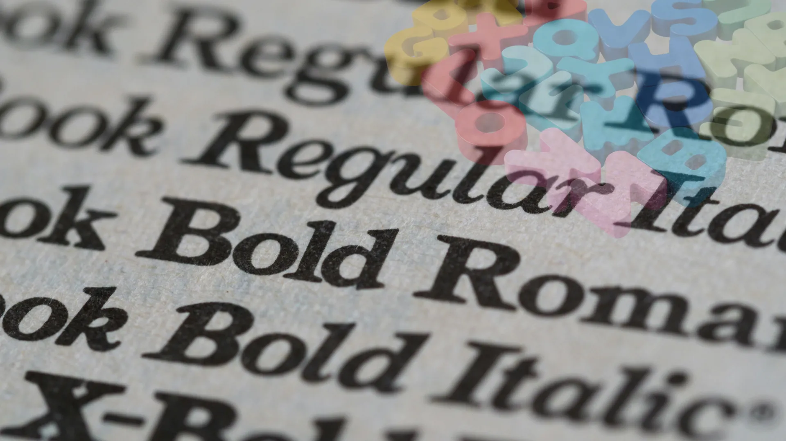

Complete guide to adding, installing, and customizing fonts in Alight Motion for professional mobile video editing

Fonts play a crucial role in video editing and motion graphics, serving as both a communication tool and a design element that can make or break your project's visual appeal. In Alight Motion, fonts are more than just text – they're a powerful creative asset that can elevate your content from amateur to professional quality.
Whether you're creating YouTube thumbnails, Instagram stories, or cinematic intros, the right font choice can significantly impact how your audience perceives your content. With Alight Motion's robust text editing capabilities, you can not only add custom fonts but also animate them, apply effects, and integrate them seamlessly with other visual elements.
In this comprehensive guide, we'll walk you through everything you need to know about using fonts in Alight Motion, from downloading and installing custom fonts to advanced customization techniques that will help you create stunning typography effects that captivate your audience. Whether you're using the AlightMotion Mod APK or the official version, this guide covers all the essential font techniques for creating professional video content.
Different fonts evoke different emotions and associations. Serif fonts convey professionalism and tradition, while sans-serif fonts feel modern and clean. Script fonts add elegance, and display fonts bring personality to your projects.
"Typography is the personality of your video content. The right font choice can transform a simple message into a powerful visual statement that resonates with your audience."
Alight Motion fonts refer to the typography options available within the Alight Motion mobile video editing application. The app comes with a selection of built-in fonts, but its true power lies in its ability to import and use custom fonts, giving creators unlimited typographic possibilities.
Unlike basic mobile editing apps that limit you to system fonts, Alight Motion supports both TrueType Font (TTF) and OpenType Font (OTF) formats, allowing you to use professionally designed fonts from sources like Google Fonts, DaFont, and FontSquirrel. This flexibility makes it an excellent choice for creators who want to maintain brand consistency or achieve specific visual aesthetics.
Alight Motion fonts can be customized in numerous ways, including:
When you import a font into Alight Motion, it becomes available across all your projects, making it a valuable long-term investment in your creative toolkit. This persistent availability means you can build a library of your favorite fonts and use them consistently across your content.
| Font Type | Characteristics | Best Use Cases |
|---|---|---|
| Serif Fonts | Have small lines or strokes at the ends of letters | Professional content, articles, educational videos |
| Sans-serif Fonts | Clean, modern look without decorative strokes | Corporate videos, tech content, modern designs |
| Script Fonts | Resemble cursive handwriting | Wedding videos, luxury brands, elegant designs |
| Display Fonts | Decorative and attention-grabbing | Titles, logos, creative projects |
| Monospace Fonts | Each character occupies the same width | Tech tutorials, coding videos, retro designs |
Adding custom fonts to Alight Motion is a straightforward process that opens up endless creative possibilities. Follow these step-by-step instructions to import and use custom fonts in your projects.
Before you can use a custom font in Alight Motion, you need to download the font file to your device. Here's how to find and download quality fonts:
"When selecting fonts, consider not just aesthetics but also readability. A beautiful font that's difficult to read defeats the purpose of communication in your video content."
Once you have your font file downloaded, you can import it directly into Alight Motion:
Make sure your downloaded font files are easily accessible. Save them in your Downloads folder or a dedicated Fonts folder for quick access during import.
After importing your font, applying it to text layers is simple:
[Insert screenshot of font import in Alight Motion here]
Alight Motion offers extensive customization options for fonts, allowing you to create unique text effects that perfectly match your creative vision. Beyond simply changing the font family, you can modify numerous properties to achieve professional-quality results.
Adjusting font size and color is fundamental to creating visually appealing text:
Shadows and outlines add depth and dimension to your text, making it stand out against complex backgrounds:
"The magic of typography in motion graphics lies in the details. A well-placed shadow or carefully crafted outline can transform flat text into a three-dimensional design element."
One of Alight Motion's most powerful features is the ability to animate text properties using keyframes:
| Animation Type | Effect | Best For |
|---|---|---|
| Typewriter | Characters appear one by one | Revealing important messages |
| Fade In | Text gradually becomes visible | Smooth, professional transitions |
| Scale Up | Text grows from small to large | Emphasizing key points |
| Slide In | Text moves into frame from outside | Introductions and titles |
Choosing the right font for your project can be challenging with thousands of options available. Here are some of the best fonts for different types of Alight Motion projects:
Combine a decorative display font for headings with a clean sans-serif for body text. This creates visual hierarchy while maintaining readability.
While adding fonts to Alight Motion is generally straightforward, users sometimes encounter issues. Here are the most common problems and their solutions:
"Font troubleshooting is often about compatibility. Stick to well-established font formats and sources to minimize issues and maximize creative potential."
Understanding the difference between Alight Motion's capabilities and default app fonts is crucial for making informed decisions about your typography:
| Feature | Alight Motion Fonts | Default App Fonts |
|---|---|---|
| Custom Font Import | Yes - Full support for TTF/OTF | No - Limited to system fonts |
| Advanced Customization | Yes - Shadows, outlines, gradients | Limited - Basic color and size only |
| Animation Capabilities | Yes - Full keyframe animation | No - Static text only |
| Font Library Persistence | Yes - Fonts available across projects | No - Project-specific only |
| Professional Quality | Yes - Print and web quality output | Limited - Lower resolution output |
This comparison clearly shows why Alight Motion is the preferred choice for creators who want professional typography control in their mobile video projects. The ability to import custom fonts and animate them with keyframes places Alight Motion in a league above basic mobile editing apps.
To install custom fonts in Alight Motion, first download a font file (TTF or OTF format), then import it directly into the app through the text properties panel. The font will be available for all future projects.
Yes, you can use free fonts from sources like Google Fonts, DaFont, and FontSquirrel in Alight Motion projects. Simply download the font file and import it into the app.
If your font isn't showing in Alight Motion, ensure it's in TTF or OTF format, restart the app after importing, and check that the font file isn't corrupted. Some fonts may not be compatible with mobile devices.
Yes, Alight Motion Mod APK fully supports custom fonts just like the Pro version. You can import and use any TTF or OTF font files without restrictions.
Popular fonts for aesthetic edits include Montserrat, Playfair Display, Raleway, and Pacifico. For gaming content, try Orbitron or Audiowide. For luxury brands, consider Cinzel or Great Vibes.
Mastering how to use Alight Motion fonts is a crucial skill for any mobile video creator looking to produce professional-quality content. With the ability to import custom fonts, apply advanced styling, and animate text properties, Alight Motion provides unparalleled typographic control for mobile editing.
"Typography in motion graphics is where art meets communication. By mastering Alight Motion's font capabilities, you're not just adding text to your videos – you're crafting visual experiences that resonate with your audience."
Remember that effective typography is about more than just aesthetics – it's about clear communication and emotional impact. Whether you're creating YouTube thumbnails that need to grab attention or cinematic titles that set the mood, the right font choice can make all the difference in your content's success.
Download Alight Motion Premium today and start creating stunning text effects that will elevate your video content. With powerful font customization tools at your fingertips, your videos will stand out from the crowd.
For more advanced Alight Motion tutorials, check out our comprehensive guides on Time Remap in Alight Motion, How to Add Audio to Alight Motion, and How to Use Presets in AlightMotion. These complementary skills will help you create even more polished and professional videos.
For more advanced techniques and tutorials, explore our comprehensive guides on XML imports, QR code sharing, and Mod APK features. Official app information and updates can be found at alightmotion.com.
Disclaimer: Educational purposes only. AlightMotion is a trademark of Alight Creative, Inc. We do not host or distribute APKs. Use at your own risk and follow local laws. For copyright issues, see DMCA.